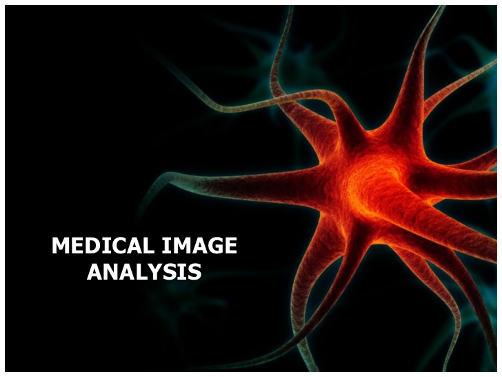

Home
Welcome
Our program is finally being relased to the public!
For information on GLUI, visit here Or, for information on our course webpage visit CSCI 3081W. Any other information can be made available upon request.
V3 Release Description
Our project was developed using two programs: FlashPhoto and MIA (Medical Imaging and Analysis).
MIA features:
- Markers can be applied to pictures
- Red pen allows for notes on images
- Many filters are available to edit entire pictures
- Load and save available for image loading
- Multiple pages can be loaded/saved at once
- Supports command-line loading, saving, comparing and filter application
FlashPhoto features:
- Stamps can be applied to pictures
- Multiple drawing tools available for application to a blank canvas or a loaded image
- Load/Save capability
- Undo/Redo functions
- Many filters are available to edit entire pictures